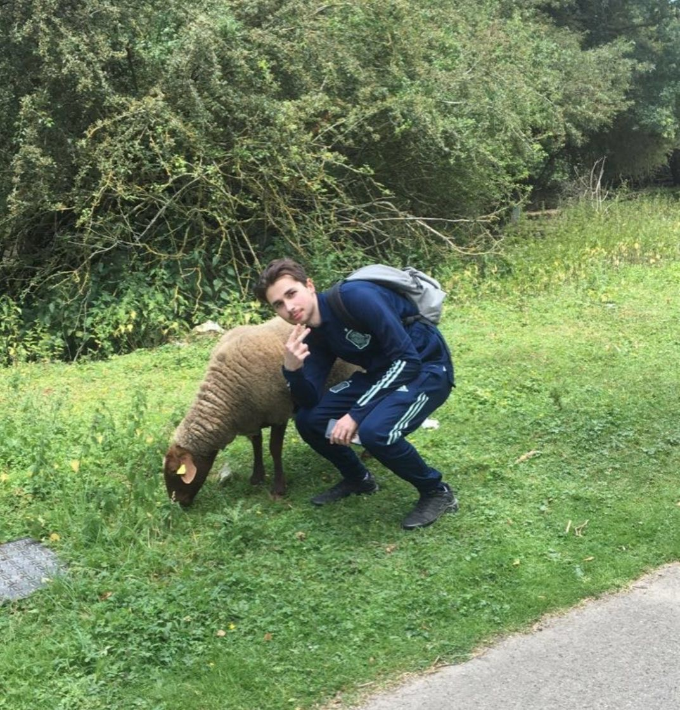

efj.fr
Bonjour, hello, こんにちは, hola, صباح الخير !
RAPHAEL RAFFRAY
Journaliste à l'EFJ

PRESENTATION
Salut, moi c'est Raphael ! J'ai 18 ans et je passioné de sport depuis tout petit, je suis actuellement en étude de journaliste à l'EFJ Paris. J'ai grandi à Trappes dans les Yvelines #78dontthink. Je fais du football en club depuis que j'ai 8 ans (à Trappes, Montigny et au Perray).
FORMATION : L'EFJ
L'EFJ, école de journalisme 2.0, forme des journalistes plurimédia, capables de s'adapter à un monde digitalisé en constante évolution. Découvrez la formation journalisme de l'EFJ Paris : une approche innovante en phase avec les nouveaux besoins et métiers du journalisme d'aujourd'hui. Notre école de journalisme répond aux enjeux d'une profession qui se transforme par l'explosion des réseaux sociaux, de la vidéo, de l'usage du smartphone et le développement des nouvelles technologies de l'information. Formez-vous à la rigueur journalistique traditionnelle tout en maîtrisant les nouveaux outils digitaux et les nouveaux mode de diffusion. Des compétences polyvalentes et indispensables au nouvel environnement des médias.
PASSION : SPORT
Ma plus grande passion c'est le sport. Je pratique le foot en club depuis que j'ai 8 ans. J'ai joué dans plusieurs clubs des Yvelines et joue maintenant au Perray, à un niveau de départemental 4. Je suit depuis petit l'Olympique de Marseille, mon club de coeur, mais aussi le Bayern de Munich (Deutsche Qualität) ou encore Arsenal (Thierry Henri revient stp). De plus, j'aime aussi le rugby, où le Stade Français est mon équipe de coeur. D'ailleurs je réalise des montages et des photographies pour des clubs amateurs tels que le Plaisir Rugby Club.
EXPERIENCES : STAGES
L'EFJ, école de journalisme 2.0, forme des journalistes plurimédia, capables de s'adapter à un monde digitalisé en constante évolution. Découvrez la formation journalisme de l'EFJ Paris : une approche innovante en phase avec les nouveaux besoins et métiers du journalisme d'aujourd'hui. Notre école de journalisme à Bordeaux répond aux enjeux d'une profession qui se transforme par l'explosion des réseaux sociaux, de la vidéo, de l'usage du smartphone et le développement des nouvelles technologies de l'information. Formez-vous à la rigueur journalistique traditionnelle tout en maîtrisant les nouveaux outils digitaux et les nouveaux mode de diffusion. Des compétences polyvalentes et indispensables au nouvel environnement des médias.
MES RESEAUX
Retrouvez-moi sur mes réseaux sociaux perso et pro !